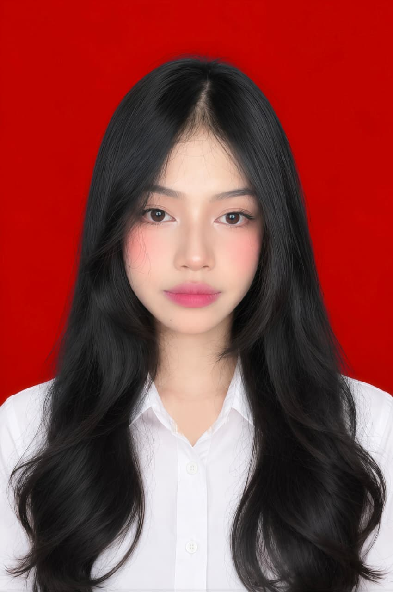

02 / PENDIDIKAN
2023 — 2026
SMK Muhammadiyah 1 Kadungora
Teknik Komputer dan Jaringan (TKJ)
Lulus 2026CURRICULUM VITAE · 2026
Calon Admin Komputer
Lulusan SMK Muhammadiyah 1 Kadungora, jurusan Teknik Komputer dan Jaringan. Siap belajar, berkembang, dan berkontribusi di lingkungan kerja profesional.

Saya merupakan lulusan SMK Muhammadiyah 1 Kadungora dari jurusan Teknik Komputer dan Jaringan. Saya memiliki ketertarikan pada bidang administrasi komputer dan teknologi informasi. Saya siap mempelajari hal baru, bekerja dengan teliti, serta menjalankan tanggung jawab secara disiplin.
2023 — 2026
Teknik Komputer dan Jaringan (TKJ)
Lulus 2026Sertifikat tes Bahasa Inggris tingkat Menengah.
Sertifikat Uji Kompetensi.
Belum memiliki pengalaman kerja formal. Siap mendapatkan pengalaman dan mengembangkan kemampuan di dunia kerja.
Saya terbuka untuk kesempatan kerja sebagai Admin Komputer.